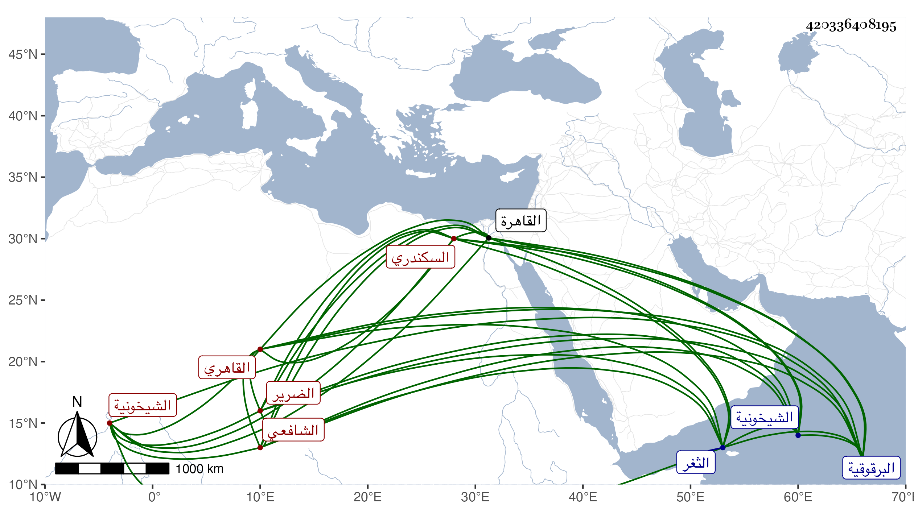

0902Sakhawi.DawLamic.ITO20230111-ara1.EIS1600.420336408195
Biography ID: 420336408195
338
عبد الهادي بن عبد الرحمن السكندري ثم القاهري الشافعي الضرير نزيل البرقوقية ثم الشيخونية ونواحيها . اشتغل بالعربية والمنطق وغيرهما وحضر دروس العلاء القلقشندي في الحاوي وغيره بل حضر عند شيخنا ولازمهما كثيرا وأخذ عن غيرهما وسمع على التاج الشرابيشي في سنة سبع وثلاثين ورافقني في دخول الثغر السكندري فسمع على بعض الشيوخ بها وبقوة وغيرهما بل كان ممن سمع في القاهرة بقراءتي على شيخنا وغيره ثم اختص بالبقاعي وتنافرا بعد ذلك وأكثر من التشعيث عليه ولزم حينئذ الأبناسي وصار يقول أنه أدخل عليه في مناسباته كثيرا من مذهب ابن عربي لعدم شعوره بفهم معناه وجاءني حينئذ وطلب مني المحاللة كأنه كان يشارك البقاعي فيما هو دأبه وديدنه مع الناس وليس قصده بهذا إلا إيهام تدينه ، وبالجملة فهو ممن فهم وتميز في العقليات ونظر في التصوف المختلط وخلط خبيث الطوية والسريرة ممن دعا لابن عربي ونحوه وذلك أعظم في دناءة أصله وأدعى لتصديق كونه دخيلا في الإسلام وأنه كان صياغا مع مزيد غلاسته وعجرفة ألفاظه وأن كان ذا فهم وقد أضر وانقطع وصار لحالة امتهان وتسافل بعض المهملين فقرأ عليه بمشاركة سبط شيخنا بعض الأجزاء بل ربما أقرأ بعض المبتدئين بعض العلوم وليس في هذه الزمرة إذ هو غير ثقة ولا مأمون وإن كان عظيم الدعوى وما أحسن ما كان يصدر من العلاء القلقشندي حين كان يبحث معه حيث يضرب على جبهة نفسه قائلا يا داهية الشؤم في مباحثتك أو نحو هذا .
